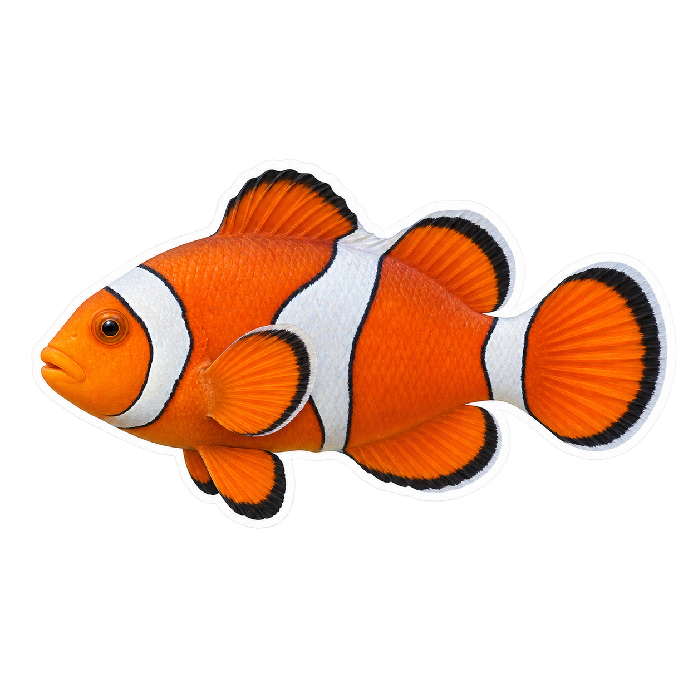
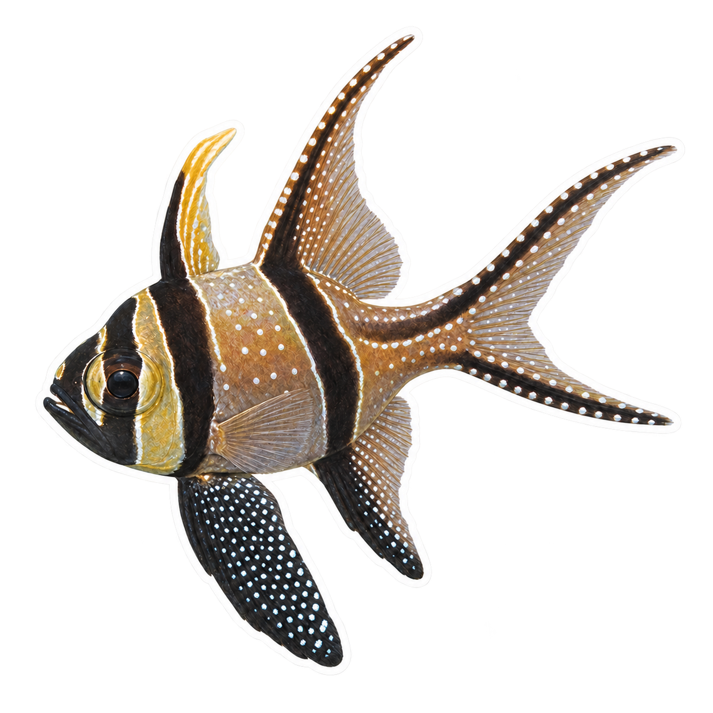
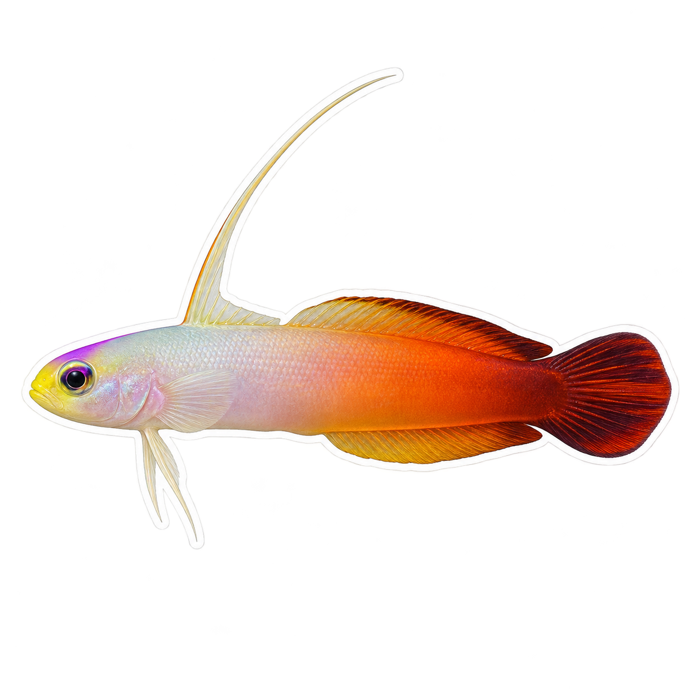
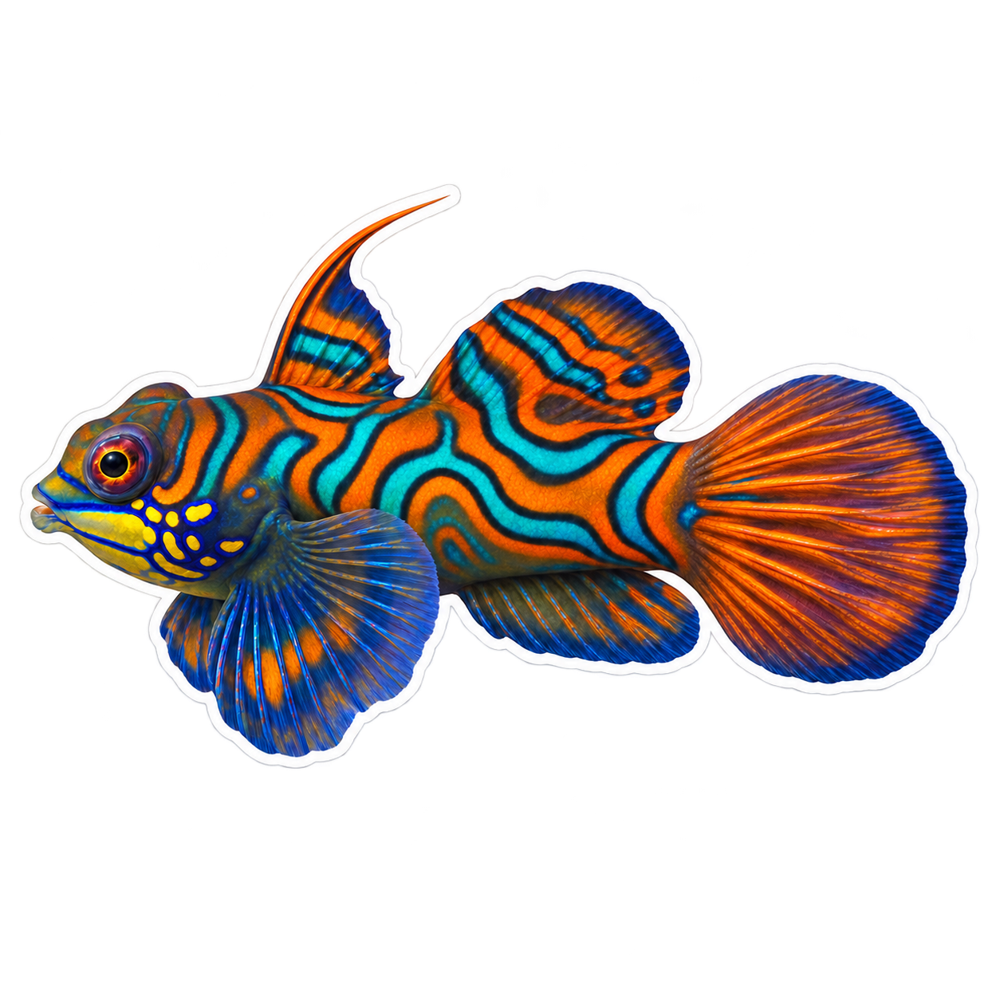

01 公子小丑Amphiprion ocellaris橙白黑三色 · 三条白带 下载 PNG ↗看参考照片 参考摄影：Erasmo Macaya Horta · CC BY 4.0
05 泗水玫瑰Pterapogon kauderni银黑竖带 · 珍珠白点 下载 PNG ↗看参考照片 参考摄影：Pauline Walsh Jacobson · CC BY 4.0
08 雷达鱼Nemateleotris magnifica白红渐变 · 细长第一背鳍 下载 PNG ↗看参考照片 参考摄影：Pierre Pericard · CC BY 4.0
09 麒麟鱼Synchiropus splendidus蓝绿橙色曲纹 · 扇形胸鳍 下载 PNG ↗看参考照片 参考摄影：Ioannis Magouras · CC BY 4.0